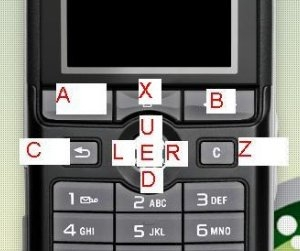

InputSensor and KeySensor nodes are used to catch keys event.
The InputSensor node is somewhat
limited: one cannot know when the user released the key or what key was pressed
when the KeySensor listens multiple keys.
The KeySensor node provides such informations:
InputSensor interface:
See InputSensor documentation for more information about this node.
KeySensor interface:
KeySensor interface is same than InputSensor.
But KeySensor introduce more information about release key, last active key and
repeat event.
See KeySensor documentation for more information about this node.

We start tutorial with a simple InputSensor example.
In example, a message is displayed on screen. Message say "Press a key".
When user press a key, message change and say "Key is pressed".
Example require a text node (see text tutorial).
Add an InputSensor node. Node read all mobile keys and it is activated.
We write a function to process key event (and an eventIn point to listen events).
This function require an access to text node.
Finally, we link javaScript function and InputSensor.
We can test. When a key is pressed, the message change.
First example code:
We would extend the first example to display the pressed key.
But we cannot easily know the pressed key with InputSensor node (a solution is
create one InputSensor by key... It is not an optimized solution).
Solution: Replace InputSensor with KeySensor.
We only change the node type (replace InputSensor with KeySensor)
and ROUTE event (replace eventTime with pressTime):
Finally, we would display pressed key.
To read and display pressed key, we use the activeKey field.
We define an access to KeySensor in script part:
And we read and display the key: